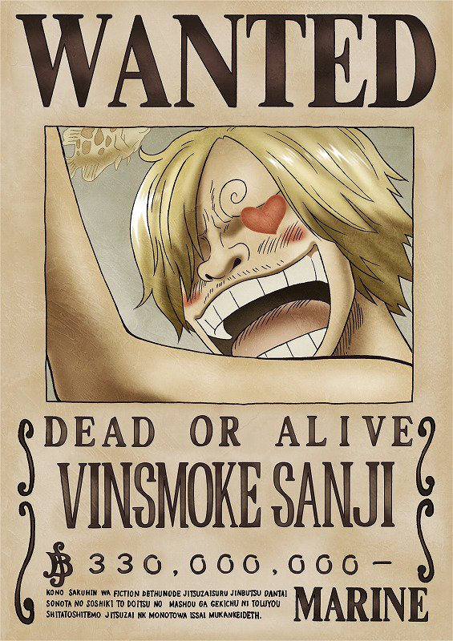
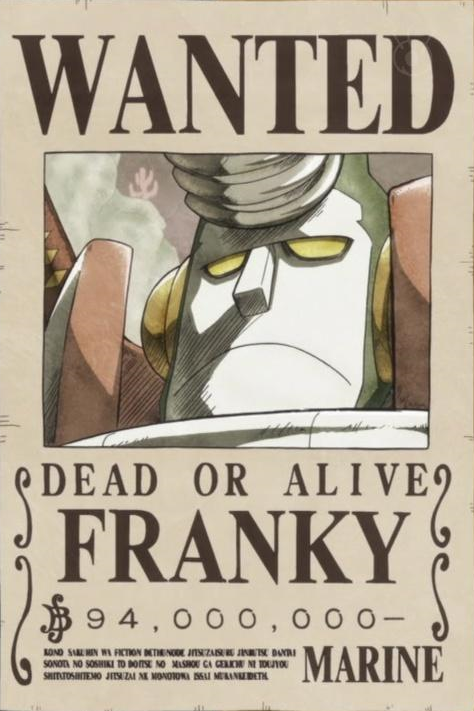

As the protagonists and notouriously powerfull crew, The straw hats have a whopping total bounty of 3,161,000,100 berries, something that they look at as recognition from the world government. Looking at this remarkably high total, here is a look at their individual bounties.
At the bottom of this list is Chopper, whose bounty has stayed embarrassingly low throughout the series. Chopper's first bounty was a mere 50 berries, as he was mistaken for a pet. Most of his activity at Enies Lobby, where most of the Straw Hats gained a bounty, was conducted while in Rumble Ball forms and due to his Devil Fruit, and thus his true form was not considered a threat due to being unrecognized by the World Government. Following Dressrosa, Chopper's bounty grew to 100 berries, still nowhere near as high as his fellow Straw Hats. It should be noted, however, that his bounty did in fact double, which should account for something.
Like many of the early Straw Hats, Nami's first bounty came after the events of Enies Lobby, in which she was deemed a threat due to defeating Kalifa of CP9. Starting with a 16,000,000 berry bounty, the navigator's bounty increased to 66,000,000 berries after her involvement with the events at Dressrosa. Nami's bounty has always remained comparatively low to the other Straw Hats, only beating out Chopper (who was mistaken for a pet). Luckily, however, she is not particularly phased about her bounty level in the same way her fellow Straw Hats are.
Prior to the timeskip and established before his time with the Straw Hats, Brook held a bounty of 33,000,000 berries for unspecified reasons. It's assumed that this bounty was accumulated during his time with the Rumbar Pirates. Due to the discrepancy between Brook's skeletal form and his old appearance in his wanted poster, his bounty was rendered inactive — it wasn't until he was discovered to be a Straw Hat it was reinstated. His first official bounty increase as a Straw Hat only came after Dressrosa, where he received an updated wanted poster featuring his skeletal appearance and his epithet, "Soul King". He now holds an 83,000,000 berries bounty, being the third lowest of the Straw Hats.
Franky's first bounty was acquired from his involvement with the Straw Hats' assault at Enies Lobby despite not being a full member of the crew at the time. He was given an initial bounty of 44,000,000 berries which stemmed from his triumph over Fukurou of CP9 and for burning the Ancient Weapon Pluton's blueprints. After defeating Señor Pink of the Donquixote Pirates and contributing to Doflamingo's downfall, Franky's bounty climbed to 94,000,000 berries, just short of the 100,000,000 milestone. His wanted poster now features an image of General Franky, his most recent Battle Franky iteration.
Of all of the Straw Hats, Robin's bounty started the highest at 79,000,000 berries following false claims that she had sunk six Buster Call battleships in her youth. The truth, however, is that she is seen as a threat as the only person who can read poneglyphs, and a high bounty was placed on her head at a young age. Because of how high her bounty started, Robin's bounty hasn't received as exponential of growth as some of her fellow Straw Hats, growing to 130,000,000 berries after aiding in Doflamingo's defeat. With how sought after she's become for her poneglyph reading abilities, it's certain her bounty will grow higher following Wano.
Usopp's bounty has had a fascinating trajectory, seeing as his initial wanted poster wasn't even credited under his name but under Sogeking, his persona, instead. His 30,000,000 berry bounty came as a result of burning the World Government's flag and for sniping marines, and it wasn't until after the timeskip his poster was corrected to feature him. For taking down Sugar of the Donquixote Pirates and subsequently aiding in the crew's downfall, Usopp's bounty grew to a remarkable 200,000,000 berries. In addition, his wanted poster once again altered his name, this time saying "God Usopp" alongside a photo of him badly beaten.
Unlike many of the Straw Hats, Zoro had a bounty prior to Enies Lobby, instead starting with a 60,000,000 berry bounty for defeating 100 bounty hunters at Whisky Peaks. His bounty grew twice after this: once to 120,000,000 berries for Enies Lobby, and finally to 320,000,000 berries after defeating Pica and taking down the Donquixote Pirates. For a long time, Zoro held the Straw Hats' second highest bounty, and earned himself a spot amongst the 11 Supernovas as one of the only non-captains. And while he has since been dethroned, his power levels and reputation are undeniable, and his bounty will surely skyrocket following his participation in fighting Kaido.
Sanji's bounty and wanted poster has undergone a significant journey, initially being a 77,000,000 berry bounty after Enies Lobby with a photo that wasn't even of Sanji. His wanted poster finally featured him after Dressrosa and grew to 177,000,000 berries. This version, however, specified Sanji to be caught alive, a rarity amongst bounties. Now at 330,000,000 berries, Sanji has retained his position as the Straw Hats' third highest bounty holder, but now bests Zoro. This vast increase attests to his family ties, his aid in Big Mom's attempted assassination, and his overall participation in the Totto Land events. What's more, his wanted poster is now reverted back to "Dead or Alive".
Though he may be the newest Straw Hat, Jinbe comes in with the second highest bounty amongst them. During his time with the Sun Pirates, Jinbe gained a 76,000,000 berry bounty which raised to 250,000,000 berries after overtaking the captain's position. When he was linked to the Seven Warlords, Jinbe's bounty froze, but it was subsequently renewed once he cut ties with the organization and began acting independently. His current and highest bounty, 438,000,000 berries, was set for the following reasons: escaping Impel Down, fighting alongside Whitebeard at Marineford, and for resigning from the Warlords.
As the captain of the Straw Hats and leader of their various groups, it's only natural that Luffy has the highest bounty. Luffy's bounty has seen numerous changes, starting at 30,000,000 berries after notoriously defeating East Blue's strongest pirates. After defeating Crocodile and publicly opposing the World Government, his bounty grew to 300,000,000 berries, where it would remain until after Marineford where it rose to 400,000,000 berries. Luffy now holds a 1,500,000,000 berry bounty, one of the highest in all of One Piece. He is now recognized as one of the most dangerous pirates, having defeated many Warlords and strong pirates (including Caesar Clown and Katakuri of the Charlotte family), and for his family ties (being recognized as related to the late Ace, Garp of the Marines, and Dragon and Sabo of the Revolutionary Army).